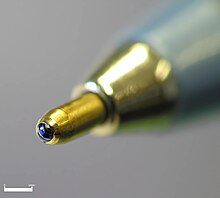
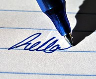
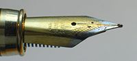
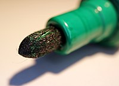
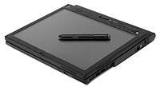

From Wikipedia, the free encyclopedia
For other uses, see Pen (disambiguation), Pens (disambiguation), and PEN (disambiguation).
For the comic, see Ink Pen.
A pen is a common writing instrument that applies ink to a surface, usually paper, for writing or drawing.[1] Early
pens such as reed pens, quill pens, dip pens and ruling pens held a small amount of ink on a nib or in a small void
or cavity which had to be periodically recharged by dipping the tip of the pen into an inkwell.[2][3] Today, such pens
find only a small number of specialized uses, such as in illustration and calligraphy. Reed pens, quill pens and dip
pens, which were used for writing, have been replaced by ballpoint pens, rollerball pens, fountain pens and felt or
ceramic tip pens.[4] Ruling pens, which were used for technical drawing and cartography, have been replaced by
technical pens such as the Rapidograph.[5]All of these modern pens contain internal ink reservoirs, such that they
do not need to be dipped in ink while writing.[6]

Writing tip of a ballpoint pen and 1mm white bar for scale
Types
Modern
Pens commonly used today can be categorized based on the mechanism of the writing tip and the type of ink:
- A ballpoint pen dispenses a viscous oil-based ink by means of a small hard sphere, or ball, which rolls over the surface being written on. The ball is held captive in a socket at the tip of the pen with one half exposed and the other half immersed in ink from the pen's reservoir. When the ball rotates, it transfers the ink - which wets the ball - from the reservoir to the external surface. The ball is typically under a millimeter in diameter and made of brass, steel, or tungsten carbide.[7] The ink, due to its high viscosity, does not permeate through paper and does not leave the tip of the pen by capillary action. As such, a bare minimum amount of ink is dispensed, with the result that the writing dries almost instantly and ink lasts longer than it does in other types of pen. Ballpoint pens are reliable, versatile and robust, and are available for a very wide range of prices. They have replaced fountain pens as the most common tool for everyday writing.
A gel pen works similarly to a ballpoint pen, in that it dispenses ink using a rolling ball held in the writing tip. However, unlike oil-based ballpoint pen ink, gel pen ink consists of a water-based gel[8] that has a pigment
suspended in it. Because the ink is thick and opaque, it shows up more clearly on dark or slick surfaces than the typical inks used in ballpoint or felt tip pens. Gel pens can be used for many types of writing and illustration. Since the gel medium eliminates the constraints of a soluble dye, many new colors are made possible, as well as some special types of ink; gel pens are available in a wide range of vibrant or saturated colors, in pastel colors, in neon colors, in metallic colors, in glitter inks, in glow-in-the-dark ink, and so on.- A rollerball pen is a pen that dispenses a water-based ink through a ball tip similar to that of a ballpoint pen. As such, gel pens might be considered a subcategory of rollerball pens; however, due to the widespread knowledge and use of the term 'gel pen', 'rollerball' is in practice typically reserved for pens which use liquid ink.[9] The lower viscosity of rollerball ink compared to oil-based ballpoint pen ink has several effects on the pen's performance. Since the ink flows more easily and is more easily absorbed into paper, more ink is dispensed in general. This changes the writing experience by lubricating the motion of the tip over the paper. It also results in a solid and uninterrupted line, since the diffusion of the ink through the paper fills small gaps that might otherwise be left by the ball point. Compared to ballpoint pens, which dispense a smaller amount of more viscous ink, the writing by a rollerball pen takes longer to dry on the page and can seep through thin paper such as to become visible on the opposite side. When the tip of a rollerball pen is held against paper, ink leaves the tip continually by capillary action in much the same way as would occur with a fountain pen. This can lead to ink blots or smears. The rollerball pen was initially designed to combine the convenience of a ballpoint pen with the smooth "wet ink" effect of a fountain pen. Refillable rollerball pens have recently become available; these generally use cartridges of fountain pen ink.
- A felt-tip pen, or marker, has a porous tip made of fibrous material, which normally remains saturated with ink from the reservoir.[10] As ink leaves the tip, new ink is drawn from the reservoir - which often consists of a large volume of a similar porous material to that used in the tip - by capillary action and gravity. As with a fountain pen, ink leaves the tip of a felt tip pen by capillary action when writing on a porous surface. However, unlike fountain pens, many markers can also reliably write on slick impermeable surfaces that are wet by the ink, and in such applications ink typically does not continually leave the pen as it is held against the writing surface. The smallest, finest-tipped felt-tip pens are used for writing on paper. Medium-sized felt-tips are often used by children for coloring and drawing. Larger types, often called "markers", are used for writing in larger sizes, often on surfaces other than paper such as corrugated boxes and whiteboards. Specialized felt-tip pens referred to by names such as "liquid chalk" or "chalkboard markers" are used to write on chalkboards. Markers with wide tips and bright but transparent ink, called highlighters, are used to highlight text that has already been written or printed. Pens designed for children or for temporary writing (as with a whiteboard or overhead projector) typically use non-permanent inks. Large markers used to label shipping cases or other packages are usually permanent markers.
- A brush pen is a pen whose writing tip consists of a small brush fed with ink from a liquid ink reservoir similar to those used in fountain pens and rollerball pens.[11] Brush pens might be either refillable or disposable, and might use either water-based or waterproof ink. The most significant functional difference of brush pens from felt-tip pens is the far greater compliance of the tip. Brush pens are an obvious alternative to ink brushes for Chinese calligraphy and Japanese calligraphy, but are now also commonly used in other forms of calligraphy and by artists such as illustrators and cartoonists. The primary appeal of these pens to such artists is that they allow a great deal of line width variation in response to small changes in applied pressure.
- A stylus pen, plural styli or styluses,[12] is a writing utensil which does not use ink, but rather makes marks primarily by creating scratches or indentations in the writing surface. As such, the tip often consists simply of a sharp metal point. Such tools are also used for other types of marking than writing, and for shaping or carving in, for example, pottery. The word stylus also refers to a pen-shaped computer accessory that is used to achieve greater precision when using touchscreens than generally possible with a fingertip. There are products available that combine a ballpoint tip at one end and a touchscreen stylus at the other.
Lines created by a gel pen (top) and a ballpoint pen (bottom)

A gel-based rollerball pen

The writing tip of a fountain pen

The writing tip of a marker

Computer with computer stylus
Historic
These historic types of pens are no longer in common use as writing instruments, but may be used by calligraphers and other artists:
- A fountain pen uses water-based liquid ink delivered through a nib, which is in general a flat piece of metal with a thin slit extending inwards from the writing tip.[13] Driven by gravity, the ink flows from a reservoir to the nib through a feed, which is in general a specially shaped solid block of material with channels and grooves cut into it. The feed delivers the ink to the slit in the nib. While writing, ink is pulled out of this slit by capillary action. A fountain pen nib, unlike the tip of a ballpoint, gel or rollerball pen, has no moving parts. A fountain pen reservoir can be refillable or disposable; the disposable type is called an ink cartridge. A pen with a refillable reservoir may have a mechanism such as a piston to draw ink from a bottle through the nib, or it may require refilling with an eye dropper. Refillable reservoirs, also known as cartridge converters, are available for some pens otherwise designed to use disposable cartridges. A fountain pen can be used with permanent or non-permanent inks.
- A dip pen (or nib pen) consists of a metal nib with capillary channels, like that of a fountain pen, mounted on a handle or holder, often made of wood. A dip pen is called such because it usually has no ink reservoir and must therefore be repeatedly dipped into an inkpot in order to recharge the nib with ink while drawing or writing. The dip pen has certain advantages over a fountain pen; it can use waterproof pigmented (particle-and-binder-based) inks, such as so-called India ink, drawing ink, or acrylic inks, which would destroy a fountain pen by clogging, as well as the traditional iron gall ink, which can cause corrosion in a fountain pen. Dip pens are now mainly used in illustration, calligraphy, and comics. A particularly fine-pointed type of dip pen known as a crowquill is a favorite instrument of artists such as David Stone Martin and Jay Lynch, because its flexible metal point can create a variety of delicate lines, textures and tones in response to variation of pressure while drawing.
- The ink brush is the traditional writing implement in East Asian calligraphy. The body of the brush can be made from bamboo, or from rarer materials such as red sandalwood, glass, ivory, silver, and gold. The head of the brush can be made from the hair (or feathers) of a wide variety of animals, including the weasel, rabbit, deer, chicken, duck, goat, pig, and tiger. There is also a tradition both in China and in Japan of making a brush using the hair of a newborn, as a once-in-a-lifetime souvenir for the child. This practice is associated with the legend of an ancient Chinese scholar who ranked first in the Imperial examinations using such a personalized brush. Calligraphy brushes are widely considered an extension of the calligrapher's arm. Today, calligraphy may also be done using a pen, but pen calligraphy does not enjoy the same prestige as traditional brush calligraphy.
- A quill is a pen made from a flight feather of a large bird, most often a goose. To make a quill, a feather must be cured through aging or heat-treatment, after which a nib is fashioned from the shaft by cutting a slit in it and carving away the sides to create a pointed tip. With practice, suitable feathers can be made into quills quickly and cheaply using no more than a small knife and a source of heat. Due to their easy availability, quills remained the writing instruments of choice in the west for a long time—from the 6th century to the 19th—before the metal dip pen, the fountain pen, and eventually the ballpoint pen came to be manufactured in large numbers. Quills, like later metal-nibbed dip pens, must periodically be dipped in ink while writing.
- A reed pen is cut from a reed or bamboo, with a slit in a narrow tip. Its mechanism is essentially the same as that of a quill or a metal dip pen. The reed pen has almost disappeared but is still used by young school students in some parts of India and Pakistan, who learn to write with them on small timber boards known as "Takhti".[14]